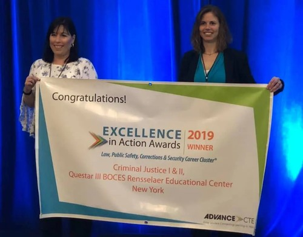
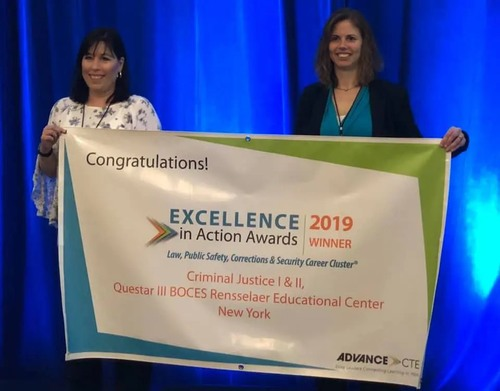

Karina Herrera
My name is Karina Herrera and I am a rising criminologist in California. I was raised in the Inland Empire and attended the University of California Riverside. My main duty is to study the patterns of criminal behavior. I made the decision to be a criminologist after years of watching how the justice system ran in California. I wanted to have the opportunity to identify the factors that lead to these acts. Moreover, I wanted to help bring change or closure. It has been quite surprising to see how much has changed since. The experiences and opportunities that have been presented have helped improve my knowledge and the way I interpret situations. The goals that I have accomplished make me a probable candidate for this position. I have years of experience with helping children, families, and much more. I believe that these skills are vital in helping unfold the truth behind crime. The crime rate has increased rapidly and we need more hands on these cases. It is important to take action before it is too late. Ultimately, there are many things that occur behind the scenes that many are unaware of.
At first, my plan was never to be a criminologist. I was unsure of what I wanted to do. It was only after watching documentaries and living real life situations that made me realize. Over the years, I questioned everything and wanted to know more of why individuals commit crimes. Attending university gave me the ability to investigate these cases further. I was put to the test multiple times. I watched documentaries and interviewed countless people. I interviewed kids, adults, and elders. I would pick individuals of all backgrounds. It was important that I obtained information from individuals that lived different lives. For instance, I interviewed children from low, middle, and high class families. Ultimately, I would note information that helped me compare crime rates in certain areas. I saw that low class children living in poverty were more likely to commit crimes. This includes joining gangs or struggling with substance abuse. My studies also revealed that high class families were far less likely to rely on the streets for survival. However, they are likely to commit crimes but in a way that is hidden from the public. The reality is that crimes come in all forms. Anyone can commit a crime and find the best alternatives to prove that they are not guility.
Overall, I achieved my masters degree in Criminal Justice at the Univeristy of Califronia Riverside. This degree has allowed me to expand my experience and participate in actions that require a lot of critical thinking. I am interested in finding a position where I can put my skills to practice and ultimately help reduce the crime rate in California. I want to travel and speak with individuals from various places to solve crime cases. I am most heavily interested in cases such as roberry, fraud, and human trafficking. Even so, it is true that crime may never end but it is still important to keep others safe. This is essential in providing safety and security to all communities.
Experience
Criminologist
• Help solve cases
• Speaker at various events
• Experience with HTML, CSS, Word
Office Assistant
• Helped schedule meetings with others
• Reviewed daily tasks and checked people in
• Created content and strategies to improve school safety
• Spoke with other peers to create strategies
Education
UC Riverside
University of California Riverside
University of California Riverside
Portfolio
.jpeg)

